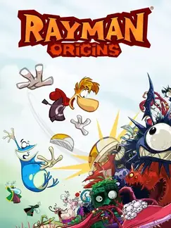

Rayman Origins
Rayman Origins
Detalles
 |
|
| Tiempo de juego | 17m 21s |
| Última actividad | 11/11/2025 9:26:38 |
| Añadido | 22/9/2025 15:56:03 |
| Modificado | 10/12/2025 13:51:56 |
| Estado de finalización | Jugado |
| Librería | Playnite |
| Fuente | |
| Plataforma | PC (Windows) |
| Fecha de lanzamiento | 15/2/2012 |
| Puntuación de la Comunidad | |
| Puntuación de la Crítica | |
| Puntuación de usuario | |
| Género | Adventure Platform |
| Desarrollador | Ubisoft Montpellier |
| Editor | Ubisoft Entertainment |
| Característica | Co-Operative Multiplayer Single Player |
| Enlaces | |
| Tag | Texto en Español |
Descripción
Después de años de estar a la sombra de los Raving Rabbids, Ubisoft y el genio de Michel Ancel decidieron que ya era hora de que Rayman volviera a sus raíces. Y no volvieron de cualquier forma: volvieron pateando la puerta con "Rayman Origins", uno de los mejores y más hermosos plataformeros en 2D que se han hecho jamás.
Lo primero que te vuela la cabeza es el arte. El juego fue hecho con el motor "UbiArt Framework", y el resultado es, literalmente, una caricatura de altísima definición en movimiento. Cada personaje, cada fondo, cada animación está dibujada a mano con un nivel de detalle y una fluidez que es para ponerlo en un cuadro. Es una obra de arte visual que no envejeció un solo día.
Pero la jugabilidad está a la misma altura. El control de Rayman y sus amigos es perfecto. Correr, saltar, planear con el pelo, trepar paredes... todo se siente increíblemente responsivo y ágil. Es un plataformero exigente, de la vieja escuela, que te pide precisión pero que siempre es justo. Los niveles de persecución donde tenés que correr por tu vida son una dosis de adrenalina pura.
Y todo esto explota en el modo cooperativo local para cuatro jugadores. Juntarse con tres amigos en el mismo sillón a jugar a esto es el caos más hermoso que puedas imaginar. Te podés pegar para molestar, revivir a tus compañeros de una bofetada o colaborar para llegar a lugares secretos. Es la experiencia cooperativa de sillón en su máxima expresión.
"Rayman Origins" es pura alegría hecha videoj-uego. Es un festín para los ojos y los oídos, con una jugabilidad tan pulida que roza la perfección. Representa un renacimiento glorioso para los plataformeros en 2D, demostrando que a veces volver a las bases es la mejor forma de innovar.